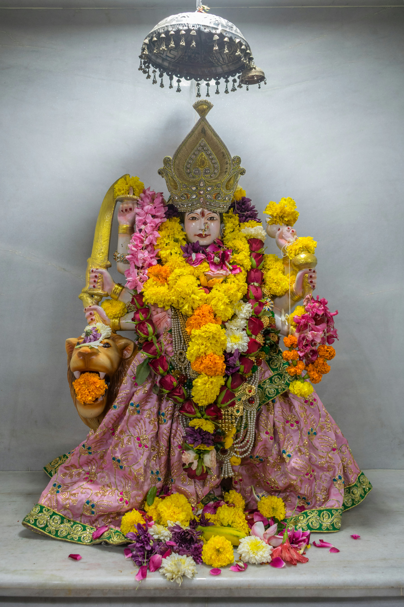

Durga Chalisa |
हिंदी |
|---|---|
| ॥ Jai Mata Di ॥ | |
| Namo namo Durge sukh karani | नमो नमो दुर्गे सुख करनी । |
| Namo namo Ambe dukh harani | नमो नमो अम्बे दुःख हरनी ॥ |
| Nirankar hai jyoti tumhari | निरंकार है ज्योति तुम्हारी । |
| Tihun lok pheli ujayari | तिहूँ लोक फैली उजियारी ॥ |
| Shashi lalat mukh maha vishala | शशि ललाट मुख महाविशाला । |
| Netra lal brikuti vikrala | नेत्र लाल भृकुटी बिकराला ॥ |
| Roop matu ko adhika suhave | रूप मातु को अधिक सुहावे । |
| Daras karat jan ati sukh pave | दरश करत जन अति सुख पावे ॥ |
| Tum sansar shakti laya kina | तुम संसार शक्ति लय कीना । |
| Palan hetu anna dhan dina | पालन हेतु अन्न धन दीना ॥ |
| Annapurna hui jag pala | अन्नपूर्णा तुम जग पाला । |
| Tumhi adi sundari bala | तुम ही आदि सुन्दरी बाला ॥ |
| Pralaya kal sab nashan hari | प्रलयकाल सब नाशनहारी । |
| Tum Gauri Shiv Shankar pyarii | तुम गौरी शिवशंकर प्यारी ॥ |
| Shiv yogi tumhare gun gave | शिव योगी तुम्हरे गुन गावें । |
| Brahma Vishnu tumhe nit dhyaven | ब्रह्मा विष्णु तुम्हें नित ध्यावें ॥ |
| Roop Saraswati ko tum dhara | रूप सरस्वती का तुम धारा । |
| De subudhi rishi munin ubara | दे सुबुधि ऋषि-मुनिन उबारा ॥ |
| Dharyo roop Narsimha ko Amba | धर्यो रूप नरसिंह को अम्बा । |
| Pragat bhayin phar kar kamba | परगट भईं फाड़ कर खम्बा ॥ |
| Raksha kari Prahalad bachayo | रक्षा करि प्रहलाद बचायो । |
| Hiranakush ko swarg pathayo | हिरनाकुश को स्वर्ग पठायो ॥ |
| Lakshmii roop dharo jag mahi | लक्ष्मी रूप धरो जग जानी । |
| Shree Narayan ang samahi | श्री नारायण अंग समानी ॥ |
| Ksheree Sindhu karat vilasa | क्षीरसिन्धु में करत बिलासा । |
| Daya Sindhu deejay man aasa | दयासिन्धु दीजै मन आसा ॥ |
| Hingalaj mein tumhi Bhavani | हिंगलाज में तुम्हीं भवानी । |
| Mahima amit na jaat bakhani | महिमा अमित न जात बखानी ॥ |
| Matangi Dhoomavati Mata | मातंगी धूमावति माता । |
| Bhuvneshwari Bagala Sukhdata | भुवनेश्वरि बगला सुखदाता ॥ |
| Shree Bairav Tara jog tarani | श्री भैरव तारा जग-तारिणि । |
| Chin-na Bhala bhav dukh nivarani | छिन्न-भाल भव-दुःख निवारिणि ॥ |
| Kehari Vahan soh Bhavani | केहरि वाहन सोह भवानी । |
| Langur veer chalat agavanii | लांगुर वीर चलत अगवानी ॥ |
| Kar men khappar khadag viraje | कर में खप्पर-खड्ग बिराजै । |
| Jako dekh kal dar bhaje | जाको देख काल डर भाजै ॥ |
| Sohe astra aur trishoola | सोहै अस्त्र विविध त्रिशूला । |
| Jase uthata shatru hiya shoola | जाते उठत शत्रु हिय शूला ॥ |
| Nagarkot mein tumhi virajat | नगरकोट में तुम्हीं बिराजत । |
| Tihun lok mein danka bajat | तिहूँ लोक में डंका बाजत ॥ |
| Shumbhu Nishumbhu Danuja tum mare | शुम्भ निशुम्भ दैत्य तुम मारे । |
| Rakta-beeja shankhan samhare | रक्तबीज-संखन संहारे ॥ |
| Mahishasur nripa ati abhimani | महिषासुर दानव अभिमानी । |
| Jehi agha bhar mahi akulani | जेहि अघ भार मही अकुलानी ॥ |
| Roop kaaral Kalika dhara | रूप कराल कालिका धारा । |
| Sen sahita tum tin samhara | सेन सहित तुम तेहि संहारा ॥ |
| Pari garha santan par jab jab | परी गाढ़ सन्तन पर जब-जब । |
| Bhayi sahaya Matu tum tab tab | भई सहाय मातु तुम तब तब ॥ |
| Amarpuri aru basava loka | अमर पुरी अरू बासव लोका । |
| Tava mahima sab rahen asoka | तव महिमा सब रहें अशोका ॥ |
| Jwala mein hai jyoti tumhari | ज्वाला में है ज्योति तुम्हारी । |
| Tumhen sada pujan nar nari | तुम्हें सदा पूजें नर-नारी ॥ |
| Prem bhakti se jo yash gaye | प्रेम भक्ति से जो यश गावै । |
| Dukh-daridra nikat nahin ave | दुख-दारिद्र निकट नहिं आवै ॥ |
| Dhyave tumhen jo nar man laee | ध्यावे तुम्हें जो नर मन लाई । |
| Janam-maran tako chuti jaee | जन्म-मरण ता कौ छुटि जाई ॥ |
| Jogi sur-muni kahat pukari | योगी सुर-मुनि कहत पुकारी । |
| Jog na ho bin shakti tumhari | योग न हो बिन शक्ति तुम्हारी ॥ |
| Shankar Aacharaj tap keenhon | शंकर आचारज तप कीनो । |
| Kam krodh jeet sab leenhon | काम-क्रोध जीति तिन लीनो ॥ |
| Nisidhin dhyan dharo Shanker ko | निशिदिन ध्यान धरो शंकर को । |
| Kahu kal nahin sumiron tum ko | अति श्रद्धा नहिं सुमिरो तुमको ॥ |
| Shakti roop ko maram na payo | शक्ति रूप को मरम न पायो । |
| Shakti gayi tab man pachitayo | शक्ति गई तब मन पछितायो ॥ |
| Sharnagat hui keerti bakhani | शरणागत ह्वै कीर्ति बखानी । |
| Jai jai jai Jagdamb Bhavani | जय जय जय जगदम्ब भवानी ॥ |
| Bhayi prasanna Aadi Jagdamba | भई प्रसन्न आदि जगदम्बा । |
| Dayi shakti nahin keen vilamba | दई शक्ति नहिं कीन विलम्बा ॥ |
| Mokun Matu kashta ati ghero | मोको मातु कष्ट अति घेरो । |
| Tum bin kaun hare dukh mero | तुम बिन कौन हरे दुख मेरो ॥ |
| Asha trishna nipat sataven | आशा तृष्णा निपट सतावैं । |
| Moh madadik sab binsaven | मोह-मदादिक सब बिनसावैं ॥ |
| Shatru nash keeje Maharani | शत्रु नाश कीजै महरानी । |
| Sumiron ekachita tumhen Bhavani | सुमिरौं इकचित तुम्हें भवानी ॥ |
| Karo kripa hey Matu dayala | करहु कृपा हे मातु दयाला । |
| Riddhi-Siddhi de karahu nihala | ऋद्धि-सिद्धि दै करहु निहाला ॥ |
| Jab lagi jiyoon daya phal paoon | जब लग जिओं दया फल पावौं । |
| Tumro yash mein sada sunaoon | तुम्हरो यश मैं सदा सुनावौं ॥ |
| Durga chalisa jo gaye | दुर्गा चालीसा जो कोई गावै । |
| Sab sukh bhog parampad pave | सब सुख भोग परमपद पावै ॥ |
| Devidas sharan nij jani | देवीदास शरण निज जानी । |
| Karahu kripa Jagdamb Bhavani | करहु कृपा जगदम्ब भवानी ॥ |
| ithi Sri Durga Chalisa sampurnam | ॥इति श्रीदुर्गा चालीसा समाप्त ॥ |
also read Hanuman chalisa here.
